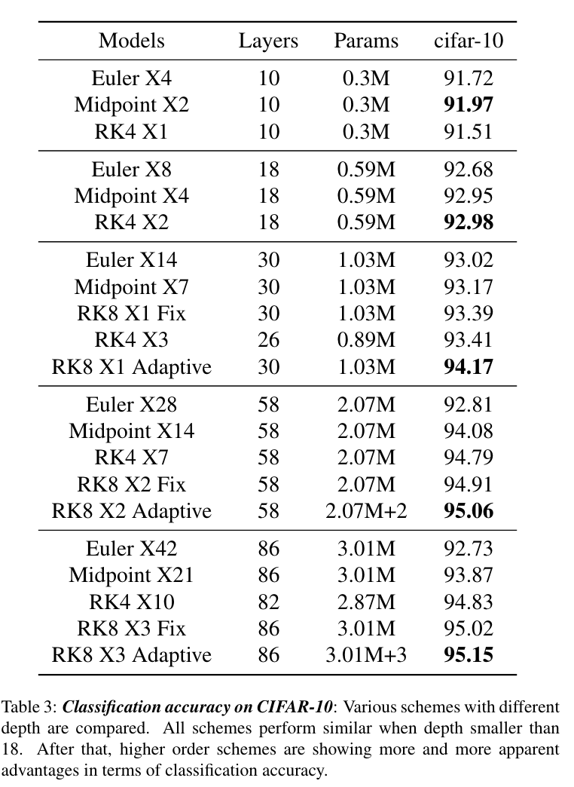

1. Rethinking ResNets: Improved Stacking Strategies With High Order Schemes（高阶ResNet）
[info] 基本信息
2021， 早稻田大学
ResNet, 理论分析, 微分方程，欧拉方法，龙格-库塔
[info] 背景
各种深层神经网络架构(DNNs)维持庞大的计算机视觉的重要记录。世界关注的同时,整体结构的设计缺乏一般的指导。许多有效的网络可以解释为微分方程的不同数值离散。ResNet的设计遵循一个相对简单的方案，该方案是Euler提出的；但是，堆叠时的情况迅速复杂化。
[info] 贡献
我们利用提出了高阶龙格-库塔ResNet (HO-Net)来探索,与给定网络设计,高阶方法如何帮助在性能方面,收敛性和鲁棒性。
提供足够的公平比较,叠加基本欧拉方法相同的顺序,以便与高阶方法比较,因此没有额外的参数和步骤。
可视化效果损失给出了更好的理解。
相应的理论支持,复杂性分析和足够的消融研
[info] 方法
利弊：方法使DNN实现更好的性能,更稳定的损失观测(训练之前和之后),收敛速度更快,和更强的鲁棒性,我们将展示在Section.3。此外,很难注意到额外成本采用2-4 阶方法时,例如中点和RK-4等,我们将分析Section.2年底。然而,该模型需要相当大的内存来存储中间状态如果完全在一个非常高阶的设计,如弗纳的RK-8(9)方案。
[info] 结论

微分方程求解的方法越高阶精度提升越大，收敛地越好，鲁棒性好。需要给加权因子来限定输出。4阶到8阶提升较小但内存消耗和时间复杂度暴增